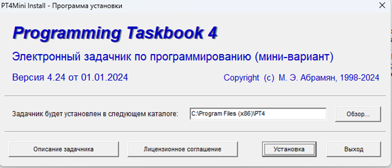
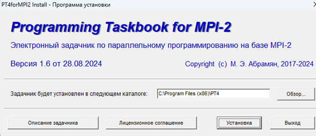
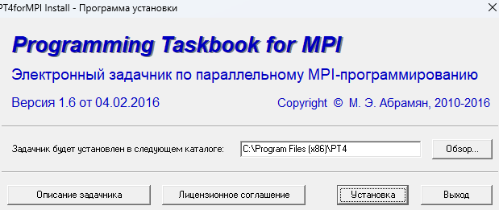

1. Установка необходимых программ
Для работы с виртуальными топологиями MPI необходимо установить следующие инструменты:
- Скачайте и установите MPICH, используемый для выполнения MPI-программ. Перейдите на официальный сайт MPICH по этой ссылке.
- Установите три файла: PT4Mini, PTforMPI2, и Programming Task Book for MPI. Ссылки и инструкции по установке см. на скриншотах ниже:   
2. Настройка среды разработки
После установки необходимых инструментов выполните следующие шаги для настройки среды разработки:
- Откройте Visual Studio Code или любой другой текстовый редактор.
- Добавьте в PATH переменные среды путь к MPICH для работы с MPI-командами.
- Убедитесь, что вы можете выполнить команду
mpiccв терминале для компиляции MPI-программ.
3. Запуск программы
Для выполнения MPI-программы выполните следующие шаги:
- Создайте файл программы с расширением
.cили.cpp. - Скомпилируйте программу с помощью команды:
mpicc -o program_name program_name.c
- Запустите программу с использованием команды:
mpirun -np
где./program_name